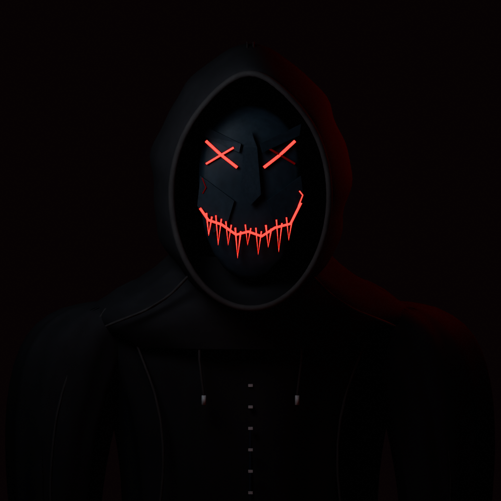
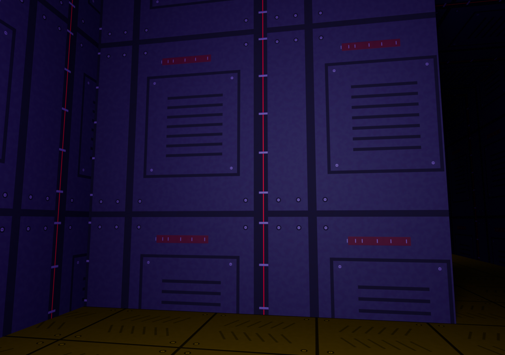
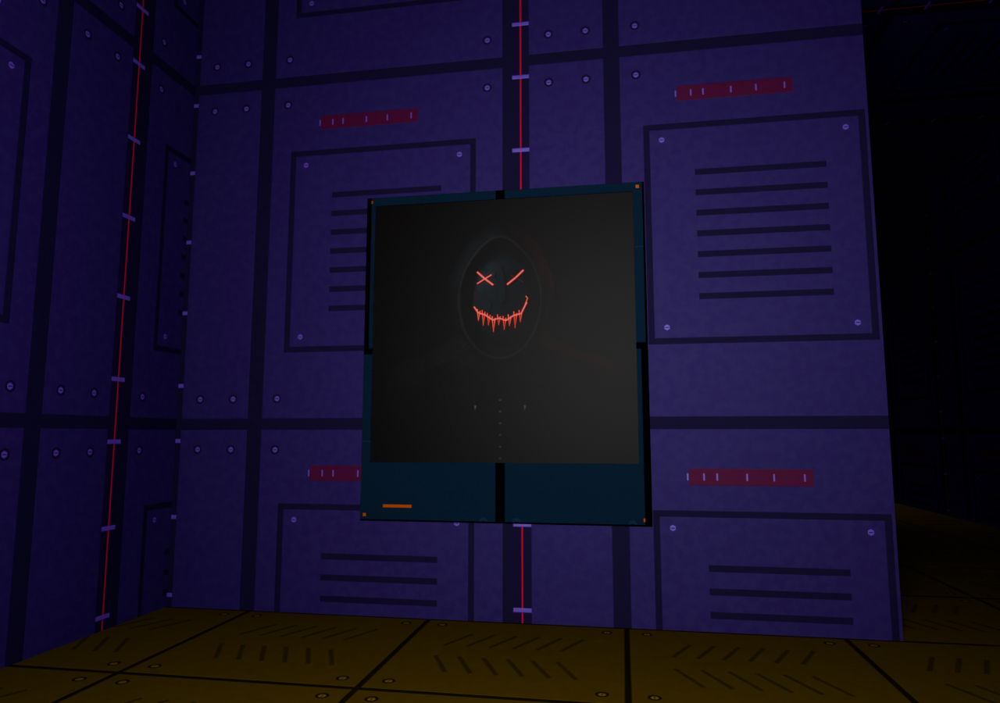
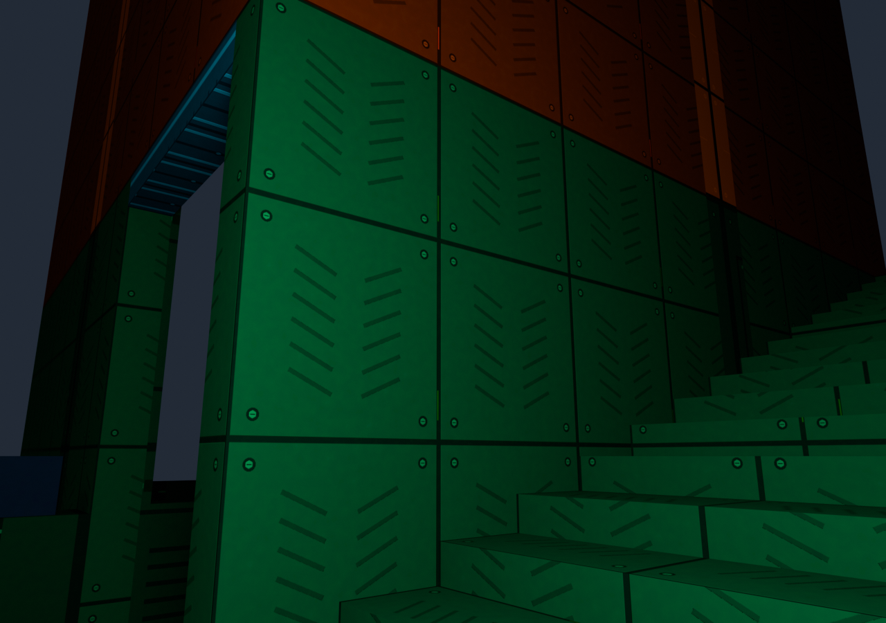
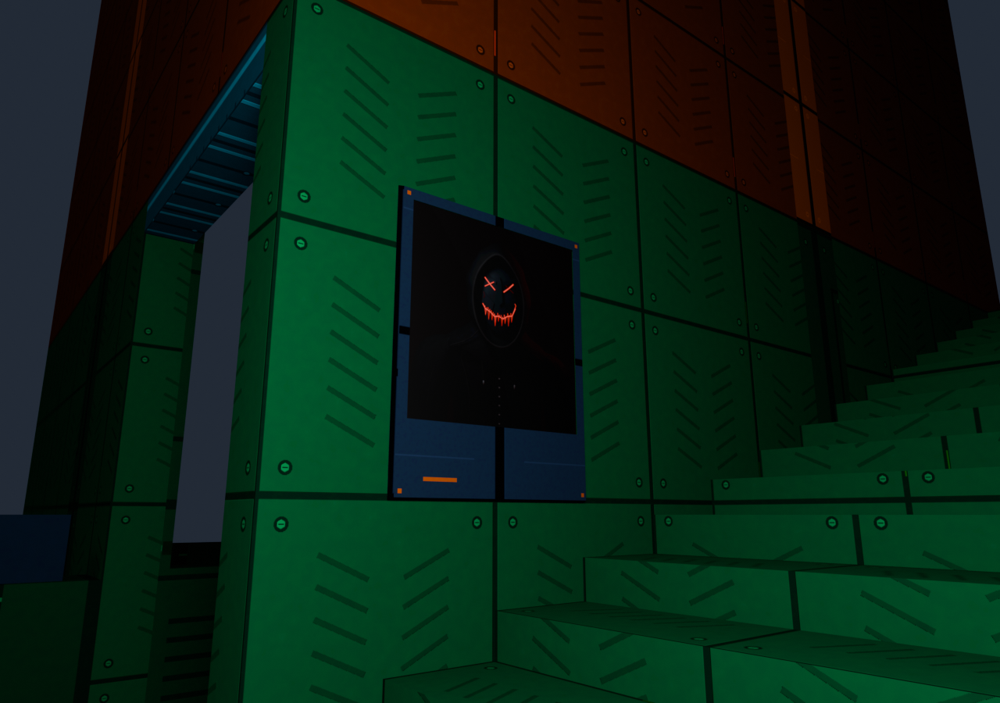
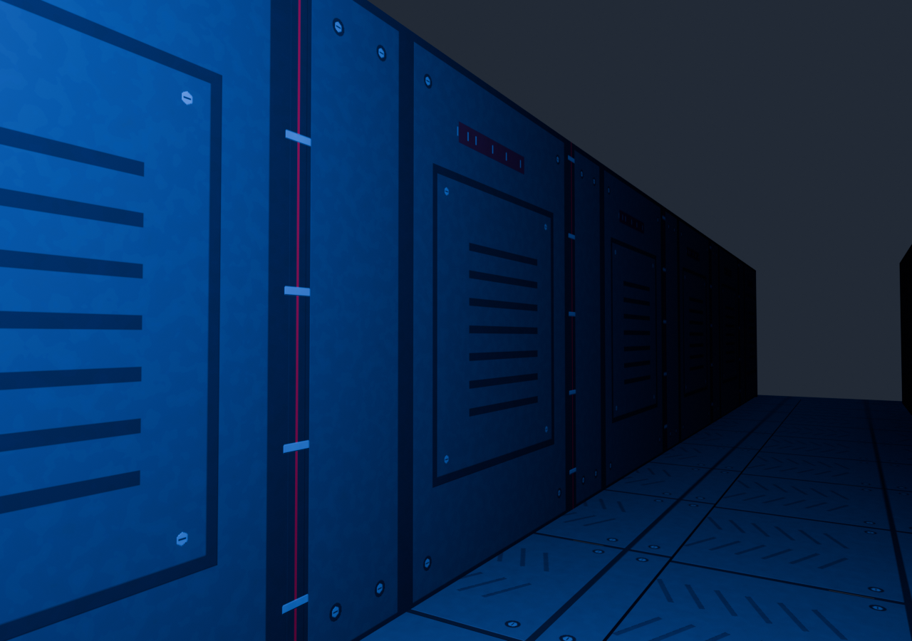
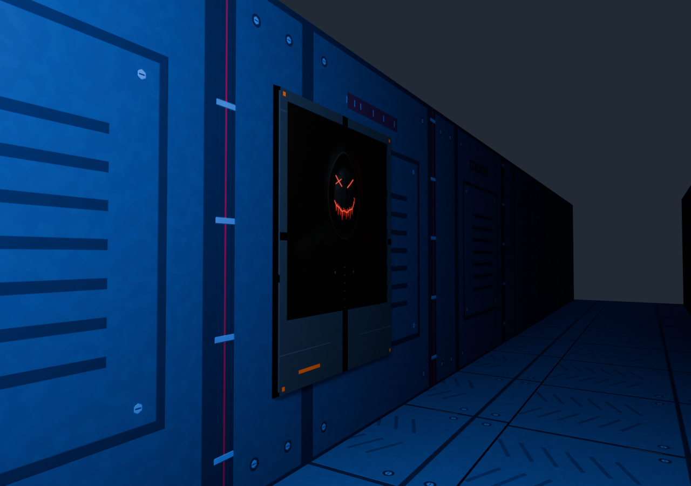
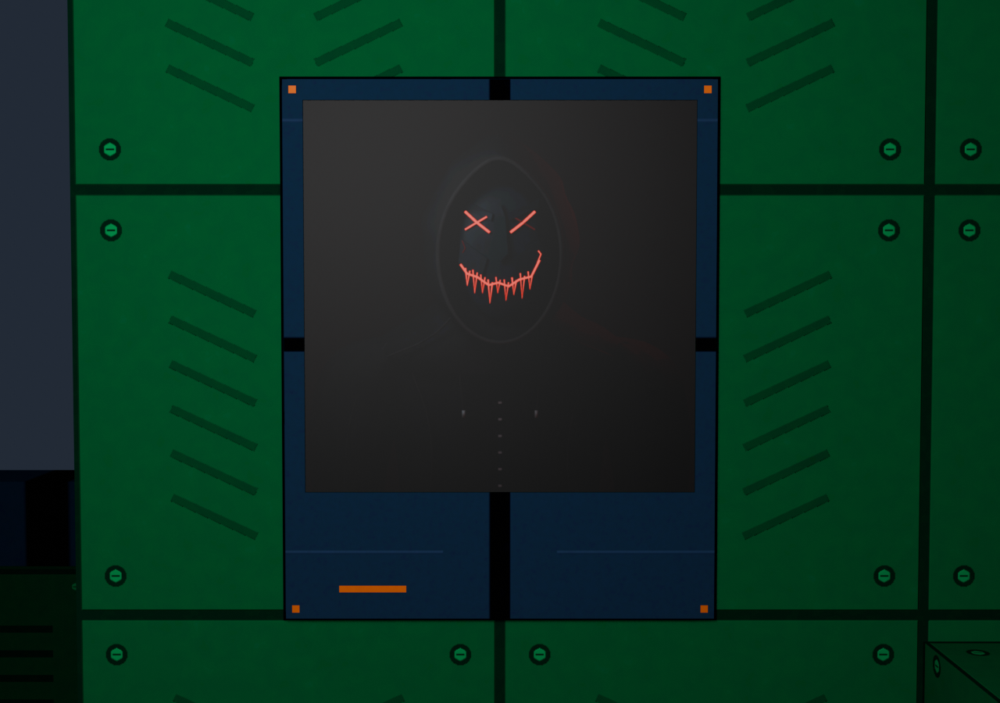

Three restrained sightings connect the Black Market Dealer with the sky monument. Existing wall surfaces carry the same face; worn graphite and bronze frames belong to the surrounding architecture.

The portrait is a fresh 1024px render of the existing native Dealer meshes and textures. His angular brows, weak right-eye stroke and uneven grin are preserved.
Three static panels · 84 triangles · one mipped image · no collision, added light entities, scripts or animation.
Blender review, not a BO3 screenshot. Panel geometry, native maps, gloss ranges and player cameras are matched to the generated map. Neutral review lighting approximates the native shader; BO3 exposure, probes and stock props are not reproduced. Final native appearance awaits the user's playtest.







Sources and reproduction · Portrait provenance · Matched preview receipt · Exact map change audit